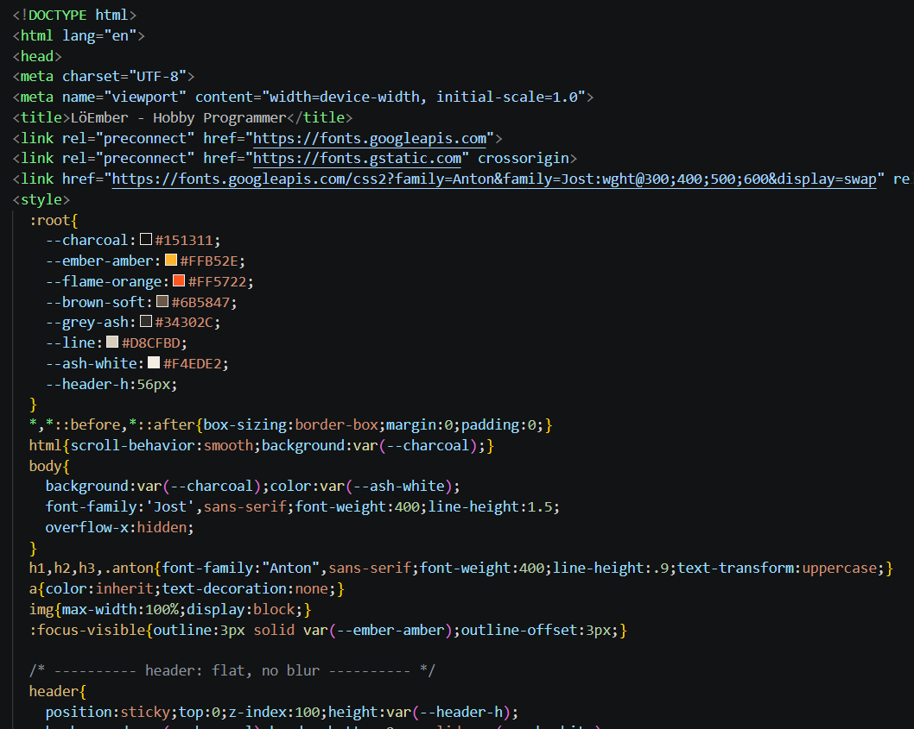
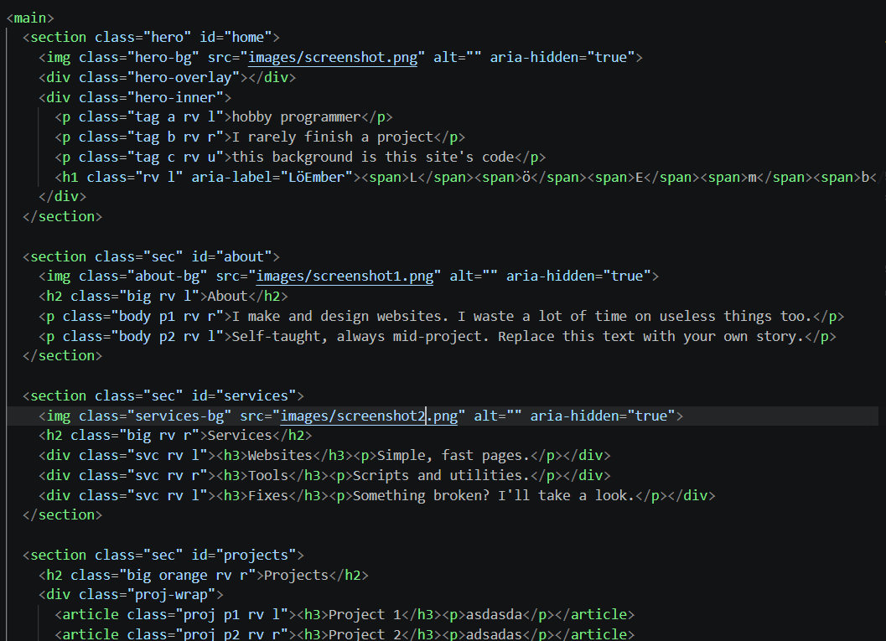
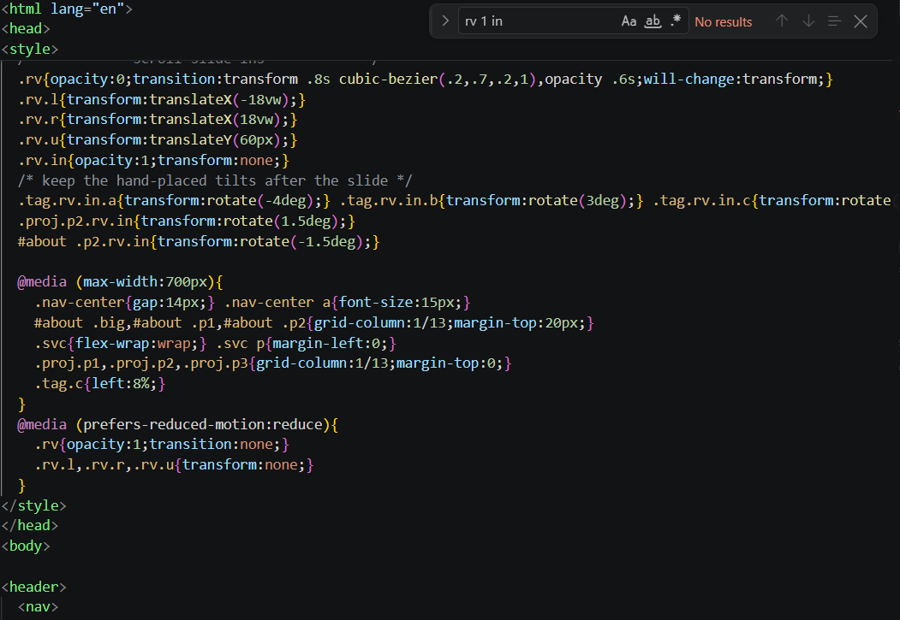
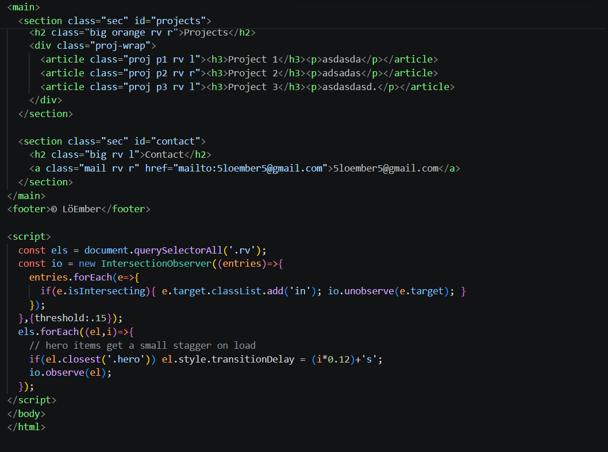

Project 1
asdasda

hobby programmer
I rarely finish a project
this background is this site's code

I make and design websites. Hint: hold right click if you are on pc.
I use AI and Visual studio code.
Tip: orbit speed 1.0 gives circular orbits, below 1 gives falling ellipses, above ~1.4 particles escape.

Simple, fast pages.
Scripts and utilities.
Something broken? I'll take a look.

asdasda
adsadas
asdasdasd.